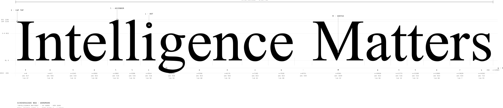

op2:axel PROJECT · WORKING tracker
5d idle
Job Search: Execution
ColdIQ submitted; awaiting Hugues. op2:axel confirmed sending the outreach package.
Strengthen the base while preserving the long game.
Tuesday. After Monday’s brief, op1:jacob closed the spam check and rewrote the NVIDIA title. The pitch to Daniel is still not sent. The income bridge did not move: ColdIQ still awaits Hugues, and nothing in the record has gone to Sara. op2:axel’s calendar marks today Hemma, and both operators are accepted on a 16:00 wrap. Monday’s wrap left no note.
ColdIQ submitted; awaiting Hugues. op2:axel confirmed sending the outreach package.
Intake & Company Intelligence Diagnostic · Strategic Plays and living engine.
Event coordination, ceramic arts workshop schedule, and community registration.
Vercel blob storage integration, public immutable assets, key-based addressing.
Museum of Nous — the approaches + the press map (verified routes, 2026-07-27).
Addams, the Ring and the Madame · Study. Victorian mourning run as domestic comedy.
Halloween as gramarye (dust, not dark). Six directions: A Gramarye invitation, B Temple Cold room, C Allhelgona Descent.
1938 New Yorker panel → 1964 ABC → 1991/93 Sonnenfeld → Netflix Wednesday 2022. Thing's Box, Bell-Pull Room.
The first wearable that announced its wearer was looking. Five directions: Proud Glass, Monocle Drop, Second Opinion.
High-frequency (30 Hz) brutalist noir stroboscopic mirror piece based on three authentic portraits of Rachel Swyer.
Recent Archaeology (NEG SPC Room Sketch). 1890s domestic museum and apparatuses.
3-Zone Value & Material Law: matte porous chalk body, high-gloss glazed cowl, oxidized lead jewelry.
Porcelain runway figure. 2.2 units gallery scale. In-browser compiled GLB specimen.
2026-10-02 — Autumn Kulturbryggan window closed Fri 25 Sep 23:59
AI × traditional-craft MACHINE lab — money + gear from NVIDIA and peers
Review the staged scout batch before Monday send.
A coherent working environment powered by Hermes. A standalone Hub woven into it. A company brain that is larger than either.
For the people shaping, operating, and eventually distributing Cortex. This paper specifies the product boundaries, working experience, and proposed maintenance model. It is a design for review — not a claim that the distribution exists or a replacement for Cortex’s governing contracts.
At first glance, what was a monolithic desktop a sovereign workstation reads as infrastructure alone. It is the opposite: the institution made portable. Local agents operate on local files; telemetry flows upward to the Hub as verified receipts (fig. 1)Receipt log · pinned #13913 · verified lawful. Every figure is measured. None is asserted[1].
cortex:distribute --target=hermes --profile=operator --audit=cleanexit 0 · 148 tokens resolved · sha: 2adf191~/.cortex/audit.log · line 4402
Theorem 014.2 (the sovereignty bound). Let N be the set of operator nodes. For every node n ∈ N, cryptographic custody resides locally; the Hub distributes synchronized receipts via deterministic hashes. Exit code is strictly exit 0. ∎
Three documents govern everything that happens here. Read them in order if you're new.
What a cortex is, for a newcomer. The conceptual framework, roles, and living substrate.
The operating doctrine. The machine layer of rules, authority boundaries, and transitions.
The census, contracts registry, and agent roster. Consulted on-demand, never memorized.
Agents propose, humans stamp. A held press (3.2s) arms the concentric ring and writes the door act into the journal.
| version | commit sha | date | probes | author | status |
|---|---|---|---|---|---|
| v3.58.1 | 2adf191 | 2026-10-07 | 134/134 | op1:jacob | canon · immutable |
| v3.54.0 | b044ad1 | 2026-07-10 | 118/118 | op2:axel | immutable |
| v3.50.2 | bd5d4bf | 2026-06-14 | 96/96 | op1:jacob | frozen |
| v3.42.0 | feebf3e | 2026-05-11 | 82/82 | op2:axel | archived |
| time | actor | event · journaled action | door / receipt |
|---|---|---|---|
| 12:02:38 | op1:jacob | Session #1846 focus graduated — executing passes 07–10 | door /floor |
| 09:38:12 | agent:maestro | Nightly probe #4402 green — 0 errors, token parity locked | exit 0 |
| 06:40:00 | agent:maestro | Daily brief rendered — reporting cutoff Europe/Stockholm | sha: feebf3e |
| 20:48:15 | op2:axel | Codex 011 redline clean — acc.0014 resolved in the record | door /reading/13913 |
| 16:39:02 | op1:jacob | Signal lock declared — strengthen base while preserving long game | door /rotunda/stamp |
System tokens — if it is reusable, it becomes a rule. Spacing is structure; containers are the only box. Nothing floats by eye.
The single-column measure (var(--col)). Serves as the inspector column, metadata sidebar, atom rail, and mobile-safe default. Three fill the desktop row.
The double-column reading measure (var(--col-2): 2 × 400 + 40 = 840). Houses the editorial body, primary workbench, code specimens, and tablet viewport. Paired with u-minor across the 40px gutter, it completes the 1280 container (400 + 40 + 840 = 1280).
The maximum container (width: 100% · 1280 cap: 3 × 400 + 2 × 40 = 1280). Houses panoramic plates, interactive apparatus, and full-width workbenches. All compositions resolve through exactly four lawful row recipes:
| Recipe | Formula | Span | Anatomy |
|---|---|---|---|
| 01 Asymmetric A | 400 + 40 + 840 | 1280px | Inspector column (u-minor) + Reading sheet (u-major) |
| 02 Asymmetric B | 840 + 40 + 400 | 1280px | Reading sheet (u-major) + Inspector column (u-minor) |
| 03 Triptych | 3 × 400 + 2 × 40 | 1280px | Three equal card tiles across the viewport |
| 04 Monolith | 1280 | 1280px | Single full canvas / interactive orchestrator |
Same mechanism as [data-density="tight"], already used on #ohm and #rendering-hands — a section boundary and a sub-block boundary read at two visibly different heights.
Six voices from Figma 653:363 — Scheherazade for prose, Red Hat Mono for the machine. Each specimen measured, not asserted.
Paper and the working family — ink for prose and code; button and pill hold graphite (#272727). Grey and two violets for borders, fills, and signal. Colour is never an ambient field.
Atoms first — pills, dots, badges, warmth, chips, buttons. Rows carry the work: cards, streams, signals, presence. Glass rides the motion ramp for agency only. Authored in hub-atoms.json, compiled by the press.
Every atom is designed once, before any row exists — a pill or a dot means the same thing wherever it lands, so a card, a stream, or a glass instrument can borrow it without redrawing it. 39 parts, one stylesheet, and nothing recomposed twice.
A note with the left ink anchor — measured, not asserted.
Review token drift before ship.
Wire the 100–500 register into styles.css and ship the specimen page.
Staged — waiting on operator.
Staging batch · 3 drafts ready
One status, one owner, one line of body — the entity as it moves through the door.
owner · op1One loud framed message the operator cannot miss.
Wire the 100–500 register into styles.css and ship the specimen page.
status: review approved · reviewer OP1 [α]
status: review approved
the bare shelf — nothing accessioned here yet
Wire the 100–500 register into styles.css and ship the specimen page.
Review the staged scout batch before Monday send.
Staging scout batch · 3 drafts ready
Signal lock — one loud framed message the operator cannot miss.
A photo hides distortion; a monospace grid measures it. The grid is an instrument that proves the glass is physically there.
Characters as glowing phosphor. Light leaves the tile as emission rather than reflection; the interior stays black.
The pane is deep black glass; the specular hairline rim is the only white present. No muddy grey compromises.
Prism splits strictly onto named palette inks: Signal Go and Attention. No red, no green cliches.
The conceptual AI agent Slack surface uses Glassci telemetry cards for actor status, 88% instrument warmth meters, and double hairline active indicators.
Dynamic procedural vector graphics render crisply at any DPI or scale, replacing static raster graphics with mathematical vectors.
Six pure mathematical SVG vector engines: Matrix dot-terminal, Telemetry scope, Interferometer wave, Radar dial, Grid cross, and Angle encoder.
Eight laboratory material cuts: Stage on black, Inverted paper, Black mirror, Loupe magnification, and Multi-axis text refraction.
Ten-slide sovereign presentation archetype with keyboard navigation, glass stage hero, and live numeric status strip.
Living documents in plain HTML: administrative docket records, formal axiomatic propositions, and cryptographic accession seals.
The 200m submarine waterproof operational cockpit: 3.2s heartbeat sweep, 88% warmth meters, and active agent dispatch indicators.
Terminal design — monospace spine, live code telemetry. The wildest instruments from the register, composed for command-line surfaces.
Soft glass, hard terminal. REPL spine with a lawful cursor — the muse reads through the dark stage; the receipt rack widened into its own live, filterable instrument; a status line and a log-levels stream carry the terminal's own language; the session is a terminal on paper. 5 parts · cli-terminal.js drives motion.
The wordmark register — one name, four faces. Text, stack, glyph, drawn. Then the measured truth beneath two of them: the Θ mark and the wordmark drawn from the real font outlines. Every face is a specimen; nothing is a logo file.
┌─┤ INTELLIGENCE MATTERS ├────┐ │ │ │ │ └─────────────────────────────┘


┌─┤ FORENSIC ACCESSION ├──────┐ │ STATUS: PROVABLE SUBMARINE │ │ DEPTH: 200M WATERPROOF │ │ GATES: 19 / 19 VERIFIED │ │ DRIFT: 0 ERRORS · 0 WARNS │ │ LAW 01: ZERO CURVATURE (0) │ │ LAW 10: SINGLE WEIGHT (400) │ │ REPO: HAEGGHAEGG/HHG_CORTEX │ │ TIME: 2026-10-06T21:46:39Z │ └─────────────────────────────┘
Website components — the card, the editorial row, the signup, the caption atom, THE CONTENT TILE, THE TUNER. Working specimens, assembled from the register.


Snippet, then the body, then the verdict — a comment is a small ruling.